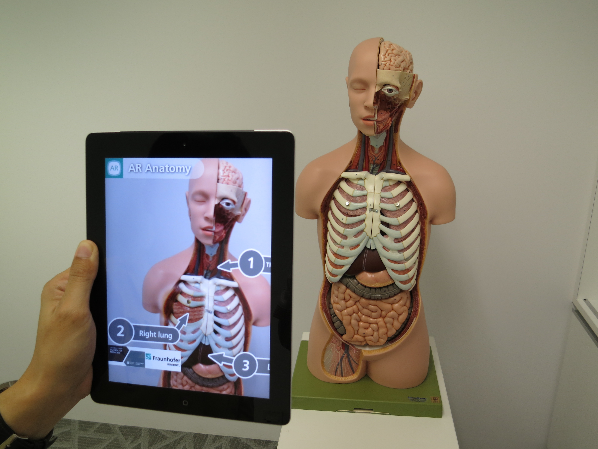

EDUCATIVO
En los últimos años, la realidad aumentada está consiguiendo un protagonismo cada vez mayor en diversas áreas del conocimiento mostrando la versatilidad y posibilidades que presenta esta nueva tecnología derivada de la realidad virtual. Con la realidad aumentada se puede identificar, localizar, obtener, almacenar, organizar y analizar información digital, evaluando su finalidad y relevancia.
Su aplicación en educación infantil y primaria se produce a partir del uso de libros con realidad aumentada que permite contribuir a la creación de experiencias de lectura enriquecida, al incorporar un componente inmersivo que estructura el contenido de forma innovadora.
Su utilización en esta área supone un enriquecimiento de la construcción metodológica, favoreciendo el proceso de enseñanza-aprendizaje de los contenidos independientemente del área de estudio. Cabe destacar que la búsqueda de escenarios más interactivos de enseñanza y aprendizaje son la raíz y la esencia del proceso educativo con realidad aumentada.
